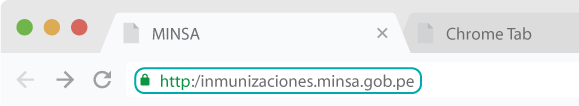
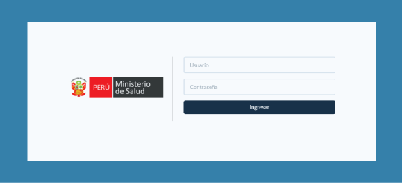
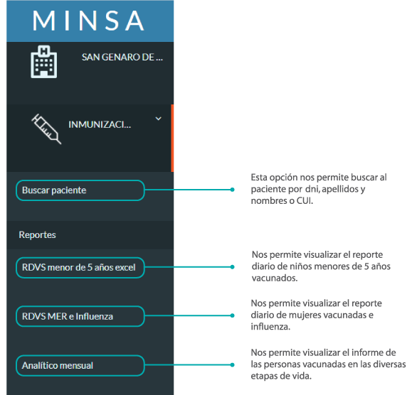
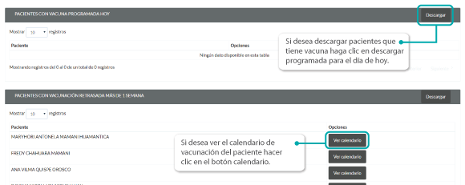

Manual de Uso
Módulo de Inmunización
Manual de Uso
Módulo de Inmunización
Presentación
En el presente instructivo se hace conocer al usuario correspondiente al servicio de inmunizaciones, las características del sistema y el ingreso de datos de forma correcta. Como tambien la emision de los formatos de registro de vacunas diarias en las diferentes etapas de vida, el informe mensual de la poblacion inmunizadas.
Ingreso al Módulo de Inmunizaciones
a. Se debe usar el navegador Google Chrome o Firefox

b. Debe escribir la url de la siguiente forma: http://inmunizaciones.minsa.gob.pe
c. Se debe escribir el usuario y contraseña (en este caso es el DNI del usuario generado por el sistema).
Nota: Por medidas de seguridad, se recomienda cambiar la contraseña, una vez ingresado al sistema)
Descripción de la Página de Inicio
1. A continuación se muestra la pantalla de inicio en la parte superior izquierda tenemos la barra de herramientas.
2. En la parte superior central se puede visualizar al ingresar al sistema, que aparecen tanto el nombre del establecimiento, como el nombre del usuario que está ingresando al módulo.
3.Luego nos aparece Menú principal del sistema. (1) Cuerpo principal de la aplicación donde se muestra la lista de “pacientes citados el día de hoy” y “pacientes que no acudieron a su cita en los últimos 7 días”.
Registro de Paciente Nuevo en módulo inmunizaciones
1. Se debe escribir el DNI del paciente en el campo Buscar
2. Aparece el resultado: los datos del paciente, el servicio que va atenderse, N° de consultorio, hora atención y el nombre del profesional.
Hay dos condiciones que se presenta de la siguiente manera: Paciente con SIS: Se confirma la cita en forma automática solo hacer clic en botón TRIAR. Caso contrario se debe confirmar la cita tan solo clic en botón CONFIRMAR Y TRIARRegistro de Vacunas
Donec ultrices vulputate tincidunt. Curabitur viverra ex ac convallis rutrum. Fusce elit tellus, vulputate sollicitudin est vitae, eleifend fringilla enim. Cras dapibus purus at arcu auctor, dictum condimentum ligula facilisis. Vestibulum ante ipsum primis in faucibus orci luctus et ultrices posuere cubilia Curae; Pellentesque maximus congue augue, tincidunt pellentesque dui feugiat in. Fusce tincidunt lacus ex, id accumsan turpis tempus sit amet. Quisque vestibulum tincidunt mauris, sed laoreet nunc mattis nec. Pellentesque magna mi, congue at suscipit egestas, tincidunt non nisl. Phasellus dignissim lacinia arcu et varius. Proin rhoncus dictum dolor id aliquet.
Nam pellentesque ipsum lacus, a aliquam ipsum euismod id. Etiam gravida gravida tellus at tincidunt. Mauris at pharetra est, vel imperdiet dui. Fusce justo nibh, lacinia id vulputate vel, blandit quis nibh. Etiam sit amet rutrum nisl, et lobortis velit. Donec nec sem sem. Suspendisse ac ante lacinia, gravida ipsum id, bibendum lacus. Duis vitae neque eu libero finibus sodales rutrum sed nisl. Proin ac tincidunt quam. Sed eros sem, varius et hendrerit non, lacinia non velit. Maecenas et purus leo.